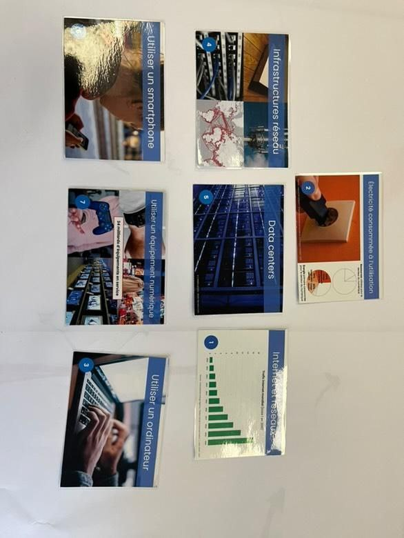
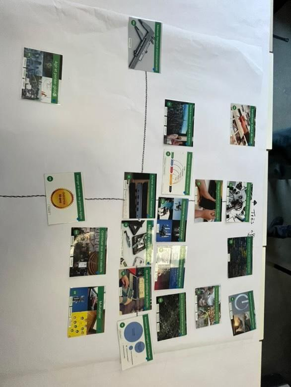
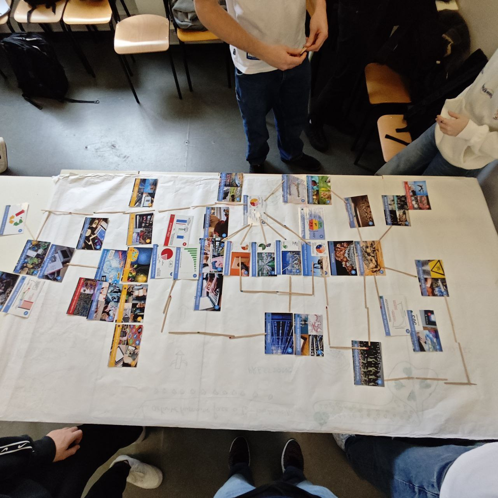

Premier atelier

L'atelier a débuté avec l'intervention d'un animateur de "Les Fresques du Numérique", dont la mission est de nous sensibiliser aux impacts et aux enjeux du numérique. Répartis en deux équipes, nous avons construit une fresque à l'aide de cartes représentant différents éléments du monde numérique (ex: datacenters, utilisation de données, pollution numérique etc...). Le but de cette première partie était de relier ces cartes de manière logique pour mieux comprendre les connexions entre elles. En fin d'atelier, un débat nous a permis de confronter nos réflexions et d'ajuster nos fresques en fonction de ce qui ressortait de ces débats.
Second atelier

Dans ce second atelier, nous devions comparer quelques solutions visant à savoir ce qui nous aiderait à réduire notre impact numérique. Grâce à un repère à deux axes (facilité d'application et utilité), nous avions classer différentes actions, comme "réparer son matériel informatique" ou "nettoyer son ordinateur", afin didentifier les plus accessibles et efficaces. Pour conclure, chaque groupe a établi un top 5 des actions prioritaires, nous poussant à réfléchir sur les meilleures solutions à adopter au quotidien.
Ce qui m'a plu

Cette activité en trois heures m'a permis de prendre conscience de l'impact du numérique, mais surtout de découvrir des solutions concrètes pour le limiter. J'ai beaucoup apprécié le côté ludique et collaboratif des ateliers, qui nous ont poussés à réfléchir de manière collective et structurée. En reliant les élements du numérique entre eux et en identifiant les actions les plus pertinentes, j'ai réalisé que chacun peut agir (à son échelle) pour diminuer les effets néfastes du numériques.